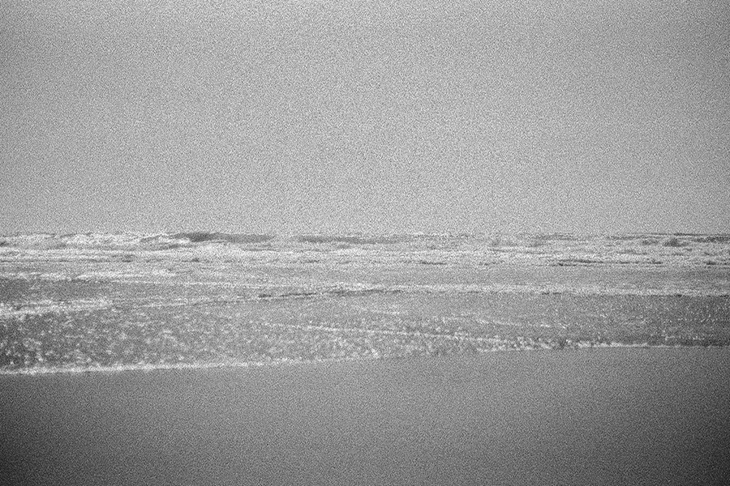
Grainy, black and white film shot of an empty beach.
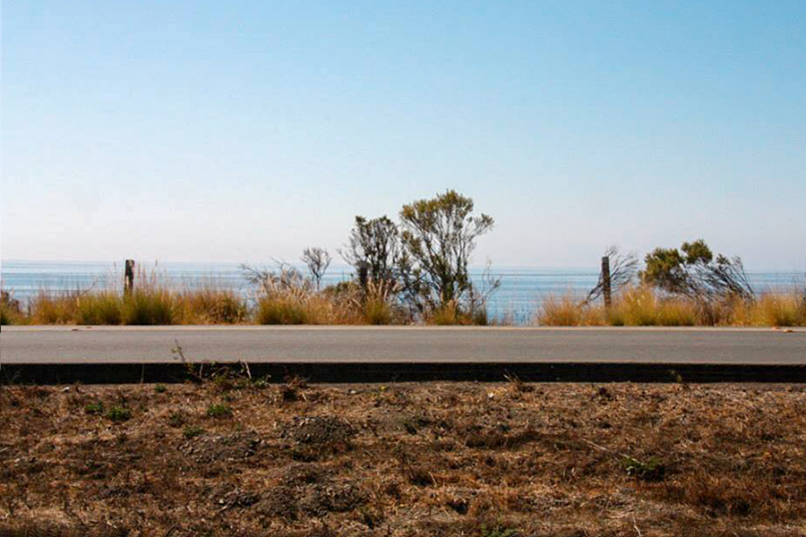
Empty, two-lane road in front of the ocean. Both sit underneath a pale blue sky. Warm-toned grass and some short bushes slightly creep in front of the ocean view.
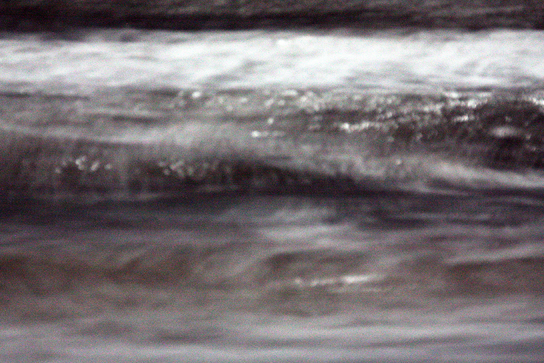
Blurry shot of ocean waves at night-time. The moon (not included in frame) creates shimmers of reflected light on the water.
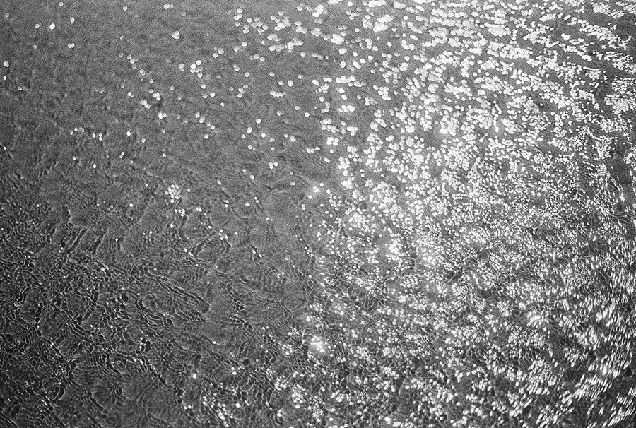
Black and white film shot of rippled ocean water. Sunlight bounces off the water and the ripples create a repetitive pattern that kind of reminds me of snakeskin.
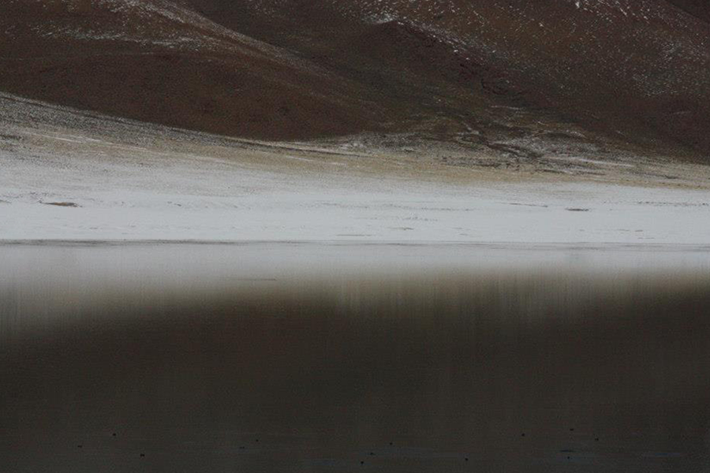
Snow lays at the base of a mountain and is reflected softly into still, neighboring water.
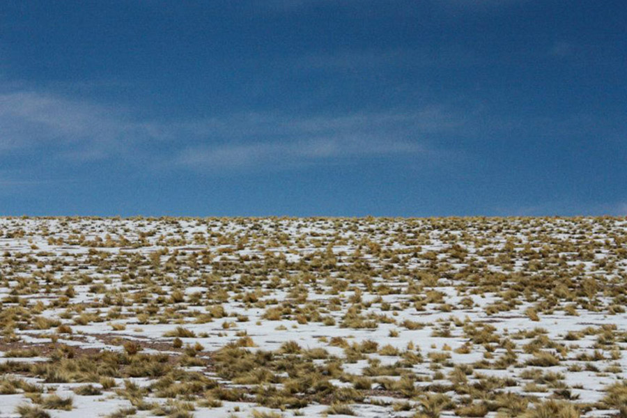
Snow-covered hill with yellow clumps of grass poking through. A saturated, clear blue sky hovers over the hill.
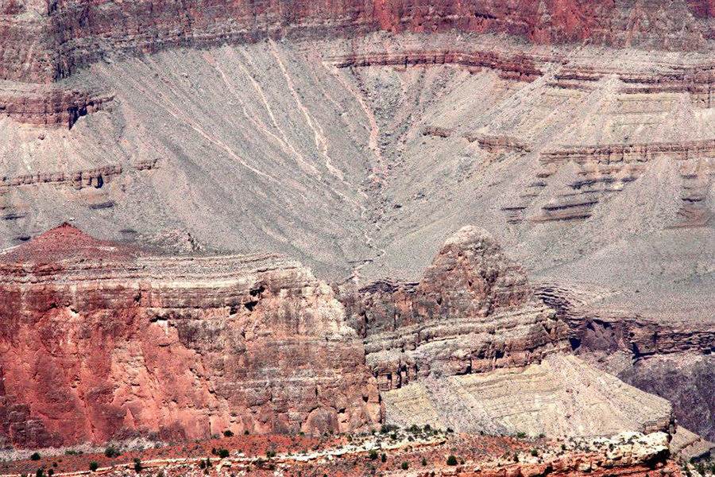
Warm-toned, rocky landscape belonging to the Grand Canyon (southwestern United States).
The bottom left corner of the photo contains vertical cliffsides with tones that are saturated and rust-colored, while a muted brown canyon with a dry riverbed hovers over the top half of the photo.
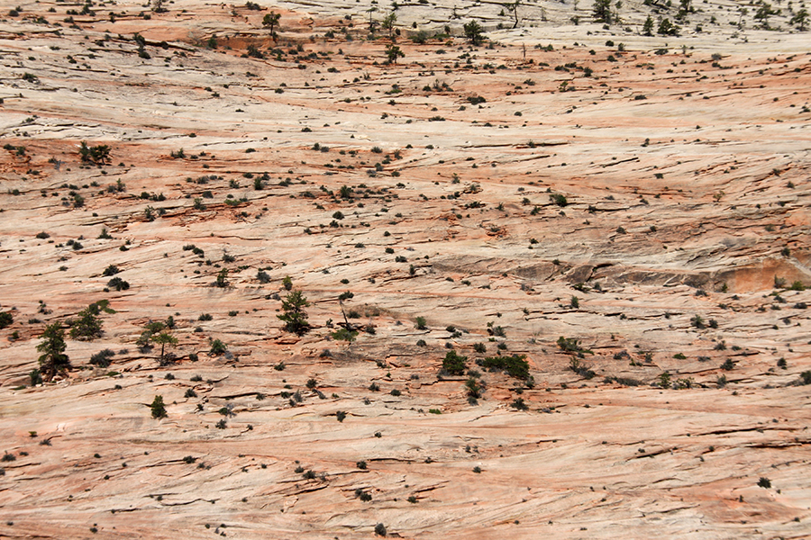
Warm-toned, smooth, rocky landscape. Tiny trees, shot from afar, resemble specks of dirt or dust.
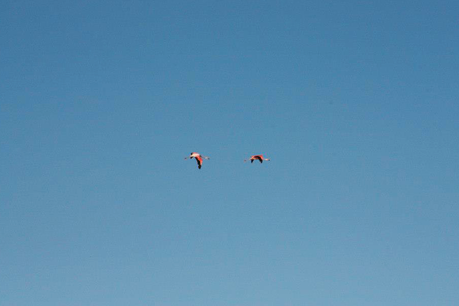
Distant shot of two pink flamingos flying through an empty, blue sky. The flamingos fly close to one another and appear at the center of the frame.
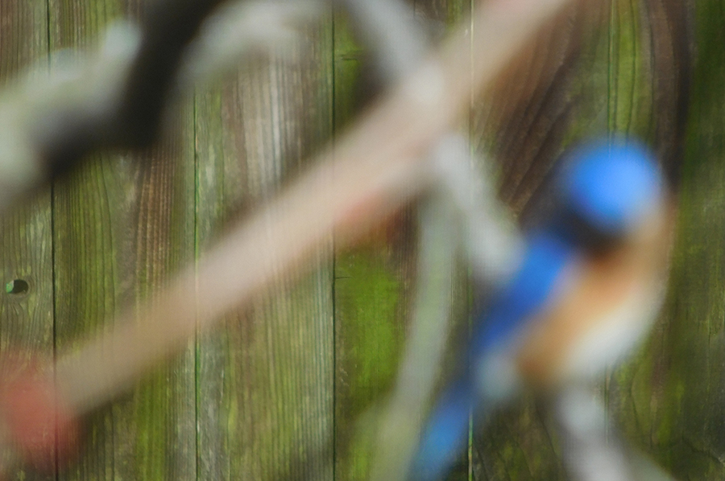
Eastern bluebird (which is a small, vibrant blue and orange bird with a little white belly) resting on a tree branch in front of a wooden fence.
The fence (in the background) is in focus, while the eastern bluebird along with the branches it's perched on (in the foreground) are blurry.
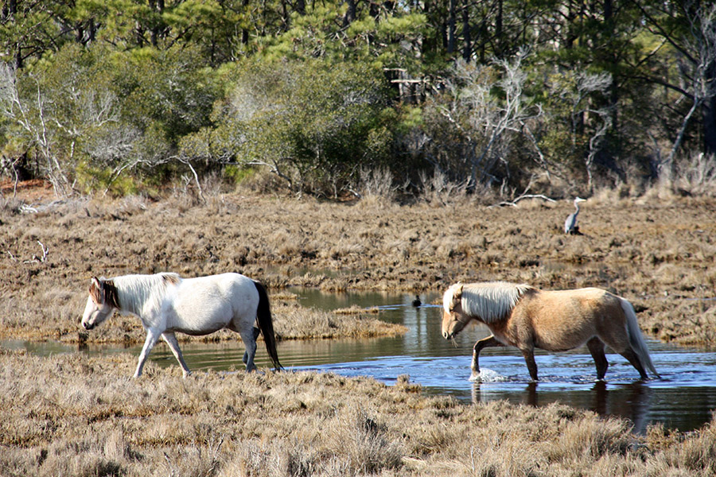
Two wild horses walk through shallow water in a marsh. A great blue heron makes a cameo in the distant background.
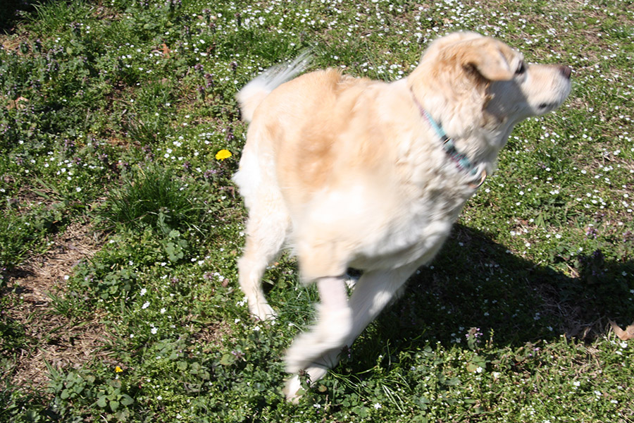
My dog, Sheena. Sheena is a medium-sized golden retriever mix and is running / playing in this photo.
She might have been chasing a squirrel or just having the zoomies. It is springtime and there are little flowers in the grass.
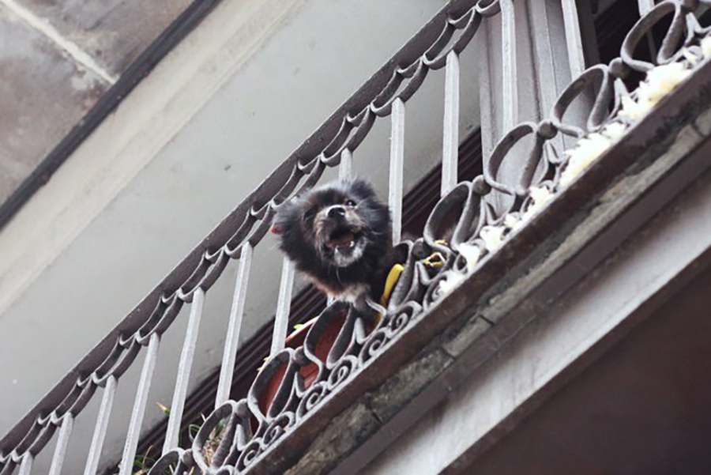
A small, black dog pokes its head out between ornate metal posts of a balcony fence. The dog is mid-bark, a mischievous grin on its face.
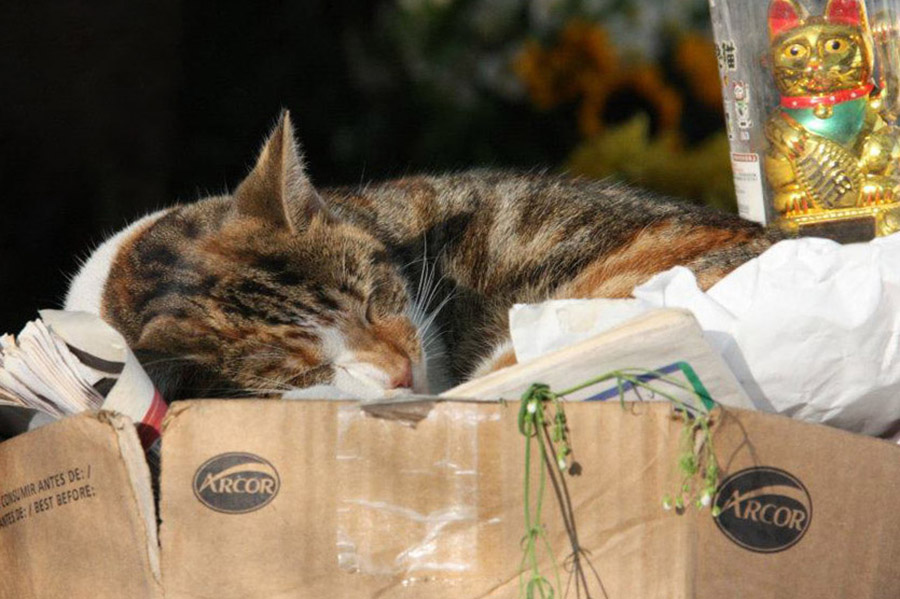
A sleeping cat curled up in a cardboard box filled with newspapers. Behind the cat is a gold, waving cat figurine (known as a maneki-neko) in clear, plastic packaging.
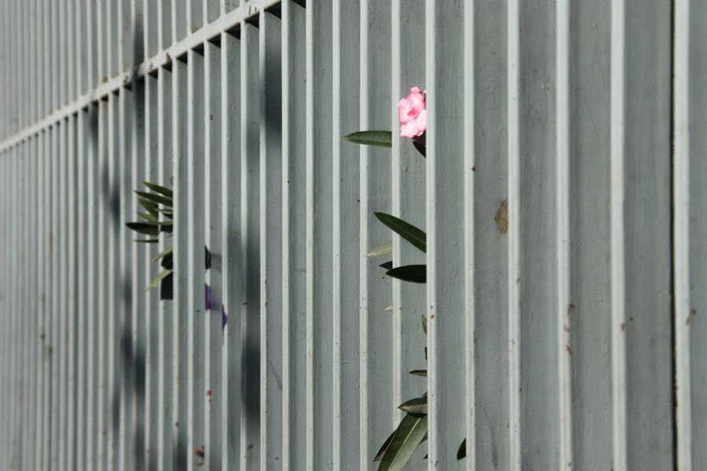
A small, pink flower with long, dark green leaves peeks through a dull, jade-green fence.
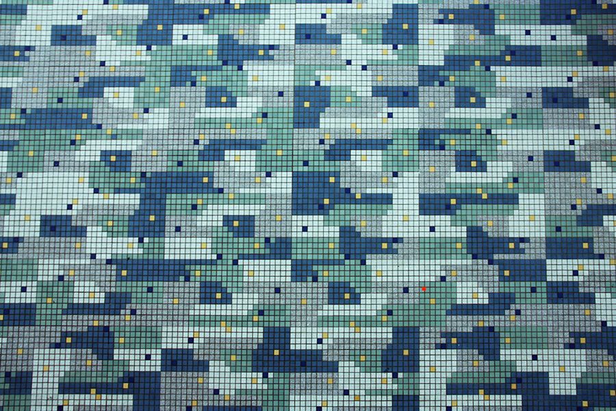
Patterned, tiled wall in shades of blue with small yellow flecks spread evenly about. The tiles are all extremely small and square shaped. The pattern kind of resembles camouflage in a way.